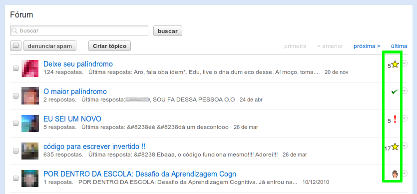
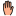
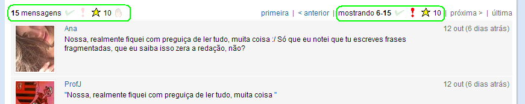

Ícones ajudam a identificar a situação de leitura dos tópicos e suas mensagens.
O significado dos ícones estão explicados abaixo.
Quanto estiver navegando no Orkut, pode-se ver uma descrição dos ícones ao passar o mouse sobre eles.
Na lista de tópicos da comunidade haverá uma coluna a mais - status - que informará:
Nas páginas de mensagens de um tópico, os ícones estarão acima da lista de mensagens e em cada mensagem. Os ícones que aparecem acima da lista se repetem abaixo da lista de mensagens.
Acima da lista, do lado esquerdo, há um indicador do número total de mensagens do tópico e poderá haver os seguintes ícones referentes ao tópico:
Na área do lado direito, acima da lista de mensagens, estão os links tradicionais para navegação entre páginas. Entre eles, há um indicador do intervalo de mensagens exibidas na página atual e poderá haver os seguintes ícones referentes às mensagens na página atual:
Na parte superior de cada mensagem, no centro, haverá um ícone de ação referente à mensagem:
Lista de tópicos
Na lista de tópicos da comunidade haverá uma coluna a mais - status - que informará:
 Não há mensagens novas no tópico.
Não há mensagens novas no tópico.- O tópico é novo / nenhuma mensagem foi lida.
- Há mensagens novas no tópico desde a última vez que foi lido. O número ao lado do ícone indica quantas mensagens há para serem lidas.
-  O tópico está sendo ignorado.
Mensagens de um Tópico
Nas páginas de mensagens de um tópico, os ícones estarão acima da lista de mensagens e em cada mensagem. Os ícones que aparecem acima da lista se repetem abaixo da lista de mensagens.
Acima da lista, do lado esquerdo, há um indicador do número total de mensagens do tópico e poderá haver os seguintes ícones referentes ao tópico:
- O tópico foi todo lido / não há mensagens novas.
- O tópico é novo / nenhuma mensagem foi lida.
- Há mensagens novas no tópico. O número ao lado do ícone indica quantas mensagens existem para serem lidas.
- O tópico está sendo ignorado. Clique para deixar de ignorá-lo.
- Clique para ignorar o tópico.
Na área do lado direito, acima da lista de mensagens, estão os links tradicionais para navegação entre páginas. Entre eles, há um indicador do intervalo de mensagens exibidas na página atual e poderá haver os seguintes ícones referentes às mensagens na página atual:
- Todas as mensagens da página atual (e anteriores) foram lidas.
- Nenhuma mensagem da página atual (e seguintes) foi lida.
- Indica que a página atual é a primeira com mensagens novas. O número ao lado do ícone indica quantas mensagens há para serem lidas na página atual.
Na parte superior de cada mensagem, no centro, haverá um ícone de ação referente à mensagem:
- A mensagem já foi lida. Clique para marcar o tópico como não-lido a partir dela
(a mensagem e todas as seguintes serão marcadas como não-lidas).
- Indica que a mensagem ainda não foi lida. Clique para marcar que o tópico foi lido até esta mensagem (a mensagem e todas as anteriores serão marcadas como lidas).